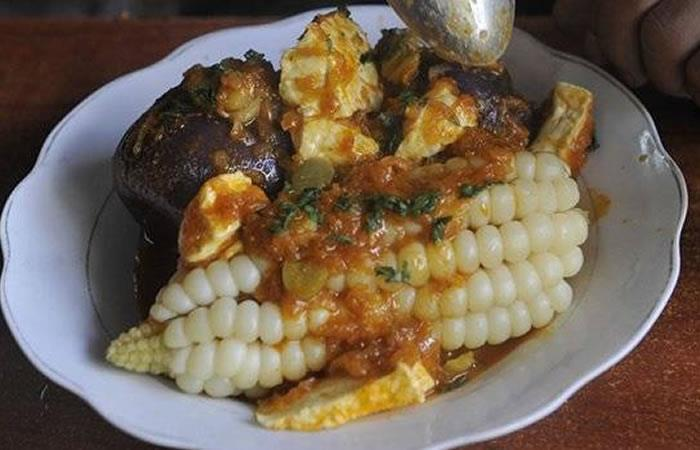

Esta pàgina nos dara una breve informacion sobre algunos platos que se suelen preparar por semana santa, al igual que dar una breve informaciòn sobre el platillo y tambièn que ingredientes se utilizan para prepararlos.